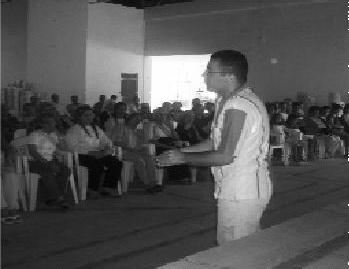

Her seminer, her organizasyon ayrı bir deneyim. Hepsinde yaşadığım heyecan ve seminer sonrasında katılımcıların umutlu bakışları beni hep mutlu etmiştir. Bir reklamda dediği gibi: Seminer vermek bir saat, insanların umut dolu bakışlarını görmeye paha biçilemez. (Oğuz Aslan)
Ankara'da bir konferansa gidiyorum. Seyircilerin arasında gülümseyen bir tip var. Ertesi gün hemşireler için düzenlenen bir konferansa gidiyorum. Bu adam yine orada. Yüzünde süper bir gülümseme var. Bir de bana asker arkadaşıymışız gibi bakıyor. İstanbul'a AIESEC'e gittim. Ben kurtulduğumu zannederken bu adamdan, baktım gülücük atıyor bana yine. Bir şekilde sızdı projeye Oğuz ve müthiş katkısı oldu. Yeteneklidir, içtendir, akıllıdır. İleride çok iyi bir eğitmen olacak, çünkü iyi kalplidir.